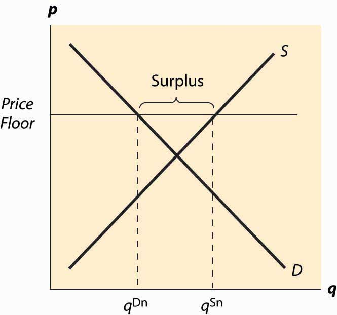
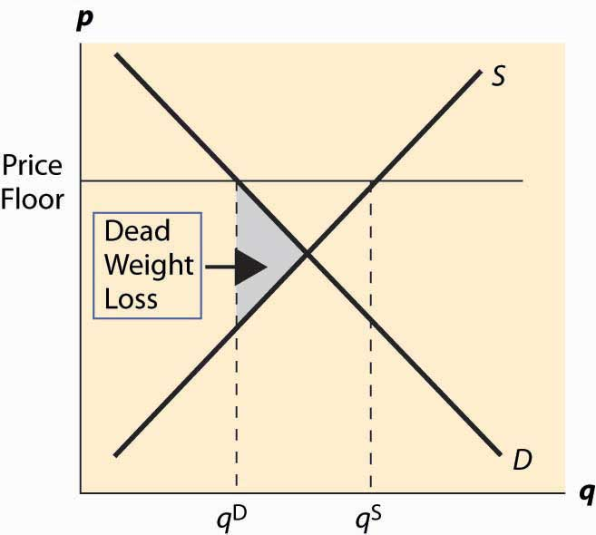
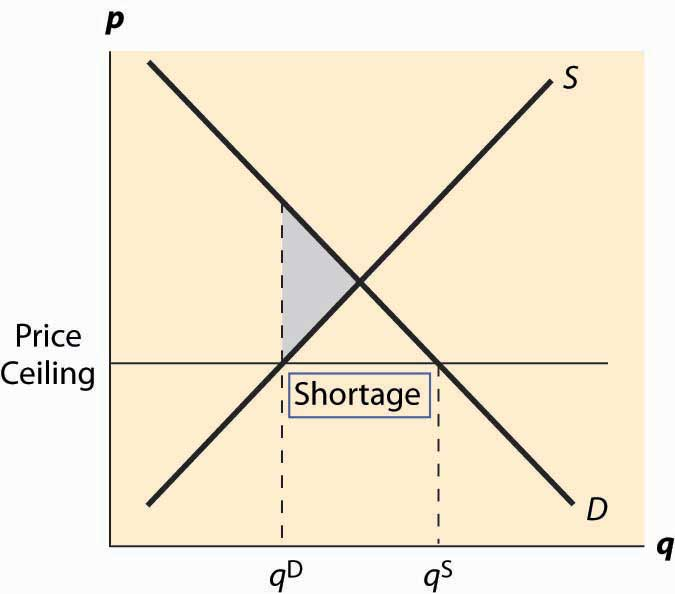

A price floorThe minimum price at which a product or service is permitted to sell. is a minimum price at which a product or service is permitted to sell. Many agricultural goods have price floors imposed by the government. For example, tobacco sold in the United States has historically been subject to a quota and a price floor set by the Secretary of Agriculture. Unions may impose price floors as well. For example, the Screen Actors Guild (SAG) imposes minimum rates for guild members, generally pushing up the price paid for actors above what would prevail in an unconstrained market. (The wages of big-name stars aren’t generally affected by SAG because these are individually negotiated.) The most important example of a price floor is the minimum wageThe minimum amount that a worker can be paid per hour., which imposes a minimum amount that a worker can be paid per hour.
A price ceilingThe maximum price that can be charged for a product or service. is a maximum price that can be charged for a product or service. Rent control imposes a maximum price on apartments (usually set at the historical price plus an adjustment for inflation) in many U.S. cities. Taxi fares in New York, Washington, DC, and other cities are subject to maximum legal fares. During World War II, and again in the 1970s, the United States imposed price controls to limit inflation, imposing a maximum price for the legal sale of many goods and services. For a long time, most U.S. states limited the legal interest rate that could be charged (these are called usury lawsLaws that limit the legal interest rate that can be charged.), and this is the reason why so many credit card companies are located in South Dakota. South Dakota was the first state to eliminate such laws. In addition, ticket prices for concerts and sporting events are often set below the equilibrium price. Laws prohibiting scalping then impose a price ceiling. Laws preventing scalping are usually remarkably ineffective in practice, of course.
The theory of price floors and ceilings is readily articulated with simple supply and demand analysis. Consider a price floor—a minimum legal price. If the price floor is low enough—below the equilibrium price—there are no effects because the same forces that tend to induce a price equal to the equilibrium price continue to operate. If the price floor is higher than the equilibrium price, there will be a surplus because, at the price floor, more units are supplied than are demanded. This surplus is illustrated in Figure 5.5 "A price floor".
In Figure 5.5 "A price floor", the price floor is illustrated with a horizontal line and is above the equilibrium price. Consequently, at the price floor, a larger quantity is supplied than is demanded, leading to a surplus. There are units that are socially efficient to trade but aren’t traded—because their value is less than the price floor. The gains from trade associated with these units, which is lost due to the price floor, represent the deadweight loss.
The price increase created by a price floor will increase the total amount paid by buyers when the demand is inelastic, and otherwise will reduce the amount paid. Thus, if the price floor is imposed in order to be of benefit to sellers, we would not expect to see the price increased to the point where demand becomes elastic, for otherwise the sellers receive less revenue. Thus, for example, if the minimum wage is imposed in order to increase the average wages to low-skilled workers, then we would expect to see the total income of low-skilled workers rise. If, on the other hand, the motivation for the minimum wage is primarily to make low-skilled workers a less effective substitute for union workers, and hence allow union workers to increase their wage demands, then we might observe a minimum wage that is in some sense “too high” to be of benefit to low-skilled workers.
Figure 5.5 A price floor
Figure 5.6 Dead weight loss of a price floor
The deadweight loss illustrated in Figure 5.6 "Dead weight loss of a price floor" is the difference between the value of the units not traded—and value is given by the demand curve—and the cost of producing these units. It is represented by the shaded, triangular-shaped region.
However, this is the minimum loss to society associated with a price floor. Generally there will be other losses. In particular, the loss given above assumes that suppliers who don’t sell, don’t produce. As a practical matter, some suppliers who won’t sell in the end may still produce because they hope to sell. In this case, additional costs are incurred and the deadweight loss will be larger to reflect these costs.
Example: Suppose both supply and demand are linear, with the quantity supplied equal to the price and the quantity demanded equal to one minus the price. In this case, the equilibrium price and the equilibrium quantity are both ½. A price floor of p > ½ induces a quantity demanded of 1 – p. How many units will suppliers offer, if a supplier’s chance of trading is random? Suppose q ≥ 1 – p units are offered. A supplier’s chance of selling is Thus, the marginal supplier (who has a marginal cost of q by assumption) has a probability of earning p, and a certainty of paying q. Exactly q units will be supplied when this is a break-even proposition for the marginal supplier—that is, ,
The deadweight loss then includes not just the triangle illustrated in the previous figure, but also the cost of the unsold units.
The SAG, a union of actors, has some ability to impose minimum prices (a price floor) for work on regular Hollywood movies. If the SAG would like to maximize the total earnings of actors, what price should they set in the linear demand and supply example?
The effects of a price floor include lost gains from trade because too few units are traded (inefficient exchange), units produced that are never consumed (wasted production), and more costly units produced than necessary (inefficient production).
A price ceiling is a maximum price. Analogous to a low price floor, a price ceiling that is larger than the equilibrium price has no effect. Tell me that I can’t charge more than a billion dollars for this book (which is being given away for free), and it won’t affect the price charged or the quantity traded. Thus, the important case of a price ceiling is one that is less than the equilibrium price.
In this case, which should now look familiar, the price is forced below the equilibrium price and too few units are supplied, while a larger number are demanded, leading to a shortage. The deadweight loss is illustrated in Figure 5.7 "A price ceiling", and again represents the loss associated with units that are valued at more than they cost but aren’t produced.
Figure 5.7 A price ceiling
Analogous to the case of a price floor, there can be additional losses associated with a price ceiling. In particular, some lower-value buyers may succeed in purchasing, denying the higher-value buyers the ability to purchase. This effect results in buyers with high values failing to consume, and hence their value is lost.
In addition to the misallocation of resources (too few units and units not allocated to those who value them the most), price ceilings tend to encourage illegal trade as people attempt to exploit the prohibited gains from trade. For example, it became common practice in New York to attempt to bribe landlords to offer rent-controlled apartments, and such bribes could exceed $50,000. In addition, potential tenants expended a great deal of time searching for apartments, and a common strategy was to read the obituaries late at night when the New York Times had just come out, hoping to find an apartment that would be vacant and available for rent.
An important and undesirable by-product of price ceilings is discrimination. In a free or unconstrained market, discrimination against a particular group, based on race, religion, or other factors, requires transacting not based on price but on another factor. Thus, in a free market, discrimination is costly—discrimination entails, for instance, not renting an apartment to the highest bidder but to the highest bidder of the favored group. In contrast, with a price ceiling, there is a shortage; and sellers can discriminate at lower cost, or even at no cost. That is, if there are twice as many people seeking apartments as there are apartments available at the price ceiling, landlords can “pick and choose” among prospective tenants and still get the maximum legal rent. Thus, a price ceiling has the undesirable by-product of reducing the cost of discrimination.